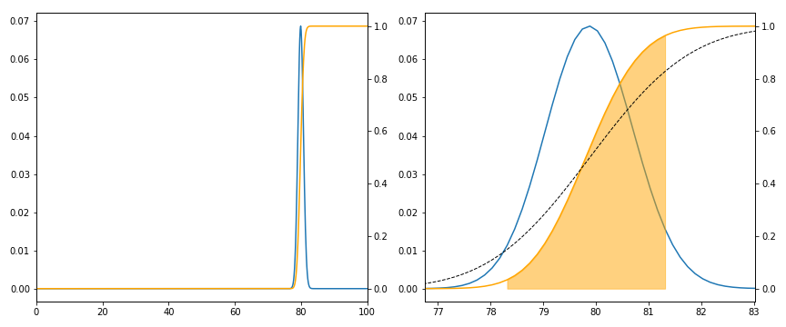
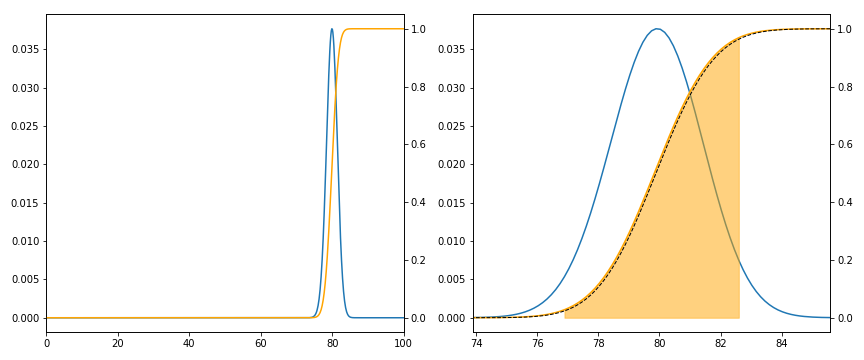

Posted on 16th March 2019
At work, we have recently had a "staff survey" performed, and yesterday we got some feedback on the results. I don't want to say anything about the content, but rather to speak about some basic statistics. It was stated that a change of about 2% (upon last year) was "statistically significant". The person giving the presentation then muttered about "standard deviation". I couldn't see what a standard deviation had to do with it.
Let us think how to model this problem. What was performed was a survey of \( N \) people, of whom \( n \) responded. Let us think about two possible ways to model how someone responds:
Assume responses are fixed, but vary between people.
So if you ask me a question today, or next week, I will respond the same way, but my office mate may give a different answer (but her response will also be the same next week). As is common, the actual questions were on a 1 to 5 scale (strongly disagree to strongly agree) and as usual, these are immediately aggregated to "agree or not". (Do not get me started on how insane it is that "neither agree nor disagree", a fence sitting response, becomes "not" and is treated exactly like "strongly disagree" in any and all analysis of the results.) So let's pretend the question is a yes/no question (like a referendum, if that is not too topical from a UK perspective).
What is then reported is \( \hat p \), the proportion of the \( n \) people who responded "yes". What we are actually interested in is \( p \), the proportion of the \( N \) people who would respond "yes". Well, actually, we are interested in the original question: is 2% a "significant" change in \( \hat p \). What exactly is meant by this? I think what is meant is that if we askes people last year and obtained \( \hat p_1 \), and then asked people this year and obtained \( \hat p_2 \), and we find that the difference is greater than 2%, then it is very unlikely that the real value \( p \) is the same in both cases. This should of course remind us of hypothesis testing. However, I strongly suspect what was really meant was that the real value \( p \) is within 2% of \( \hat p \). This should remind us of a confidence interval. Of course the two notions are not the same (the difference between \( \hat p_1 \) and \( \hat p_2 \) can easily be greater than 2% while both being within 2% of \( p \)).
As people's responses are fixed, this is a pure sampling problem, which could be modelled as drawing balls out of a bag, for example. This leads us to the Hypergeometric distribution. Before we continue, we should estimate the values of \( N,n,p \). I think \( N=1000 \) is reasonable, \( n \) is around 70% of \( N \), and, to be kind to my employer, let us suppose \( 0.4 \leq p \leq 0.95 \). In particular \( n \) is of the same order as \( N \), so this is very different to the classical survey setup where \( N \) is very large compared to \( n \). Thus we should be at least careful in apply standard approximations.
Below I plot the case when \( N=1000, n=700, p=0.8 \). The x axis is the number of responses (as a percentage of \( n \)) which are "yes", and in orange I plot the cumulative probability. Shaded is the 95% confidence interval: to be precise, if \( p \) is fixed, and we repeated the experiment many times, 95% of the time \( \hat p \) would lie in the shaded region. The black dashed line is the normal approximation which for these values is not very good (our value of \( n \) is too large compared to \( N \)).

This confidence interval is not what we want, IMHO. We know \( \hat p \), and we wish to estimate \( p \). That is, we run many, many experiments with \( N,n \) fixed but \( p \) varying, pick out those which give \( \hat p \) (everything is discrete, so \( \hat p \) only takes finitely many values), and see what distribution we get for \( p \). Of course to do this requires us to put a prior distribution on \( p \), that is, I yet again find myself being a Bayesian. I shall not consider this complication now.
However, we do find that, approximately, the confidence interval is about 2% wide, and so a change of 2% in \( \hat p \) does indicate a real change in \( p \).
People are modelled as interchangeable, each independently a Bernoulli random variable
This is blatantly not a good model (I do not randomly flip a coin when answering a survey; well, not usually). However, I suspect it is a model which might (implicitly) be often used. The statistical model is now a sum of IID Bernoulli's with common parameter \( p \). That is, a Binomial distribution with \( n \) trials. Notice now \( N \) does not matter.
This model is appropriate, and in fact is mathematically equivalent, to sampling with replacement: we have our bag of \( N \) balls, containing \( Np \) marked "yes", and we sample \( n \) of them, but now we replace each ball after sampling it. Hence, if \( N \) were large compared to \( n \), this would be a good approximation (essentially because the chance of sampling the same ball more than once is tiny).
Below is the same plot for this model. Notice now that the normal approximation is much better (as expected) but that also the distribution is more widely spread. Notice also that the confidence interval is now around \( \pm \) 2%, that is, 4% wide. Under this model we need to see twice the movement to get a significant change.

A mixture of the two models. My views over time are consistent, but there is an "error" (maybe I fill in the survey when having a bad day).
There are lots of ways to model this, and I am far from being an expert:
This further complicates the problem of inference: there is no "true value of \( p \)" anymore. I suspect I am being lead to some sort of multi-level model.
We should not forget the problems of a "biased" sample.
That is, which \( n \) people actually go to the bother of filling in the survey? Remember that is the idealized version of a survey, we choose people at random, and they definitely respond. I do not know how to model this without making wild assumptions.
I am always suspicious of "A 2% difference is significant". What model was used? How was this value arrived at? We saw at the start a number of different possible interpretations; and we saw two models which gave a factor of 2 different answers.
What is interesting in this example is that standard survey techniques do not apply, as we are actually surveying a large proportion of the total population. In the extreme case when everyone answered, there would be no inferential statistics to perform, assuming the basic probability model I used initially.
Where does the standard deviation appear?
If we assume \( N \) is much larger than \( n \), so a binomial model is appropriate, and further \( n \) is large, so a normal approximation can be used, then we arrive at the Standard error. This is the standard deviation of the sampling distribution which is often approximated by using the sample standard deviation divided by the square-root of the sample size. As we saw, this is too simple, and so we should also remember the correction for finite populations.
Our model is that \( n\hat p \sim \operatorname{Bin}(np, np(1-p)) \) or under the normal approximation, \( n\hat p \sim \mathcal{N}(np, np(1-p)) \) so \( \hat p \sim \mathcal{N}(p, p(1-p)/n) \) and hence the standard deviation of \( \hat p \) is \( \sqrt{p(1-p)/n} \). Thus the standard error is also \( \sqrt{p(1-p)/n} \). Applying the correction factor \( \sqrt{1-\frac{n}{N}} \approx \sqrt{0.3} \approx 0.55 \), we obtain that 2 standard errors is at most \[ \approx 2 \times 0.55 \times \frac{1}{2\sqrt n} \approx 0.029 \] if \( n=700 \). With \( p=0.8 \) this drops to \( 0.016 \), or about 2%.
However, overall I prefer the approach of using an explicit model, and making use of computers to estimate values which are analytically hard to calculate. The Jupyter notebook is available on GitHub.